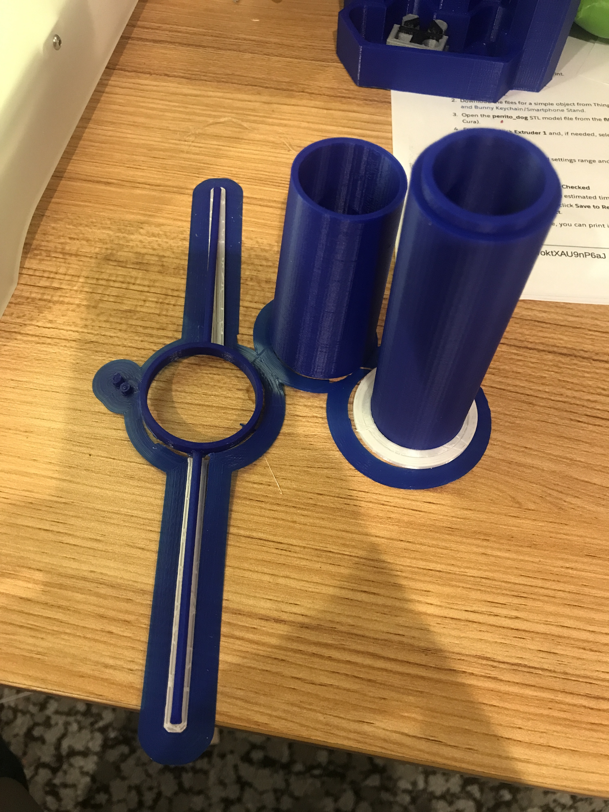

process
01
Get Inspired
More Pinterest inspiration-- little did I know that this week would be known as a series of unfortunate maker events. I wanted to do something a little organic and leverage the idea of a living hinge to create something flexible.
My Makerspace board is here.
02
Sketch
Sketching to get an idea of what I could build. I ended up spending a lot of time using my sketch as a way to track measurements of different components.
03
Building 3D models and vectors in Grasshopper + Rhino
The primary video I referenced taught me how to do OffsetCrv.
Since I spent more time last week learning Rhino and Grasshopper, I leveraged it for my project this week by using it as a way to do my base model, which was fortunate because ended up doing a lot of resizing. I also ended up building some
things I didn't use as well as building things that just didn't work when printed since the offset curve ended up throwing off my measurements. Fortunately my lampshade connector worked well for the lamp set-up I used and I was able to use
that radius to update my other shapes.
The carnage of models that didn't meet requirements in Rhino
What I used (left) vs what I didn't use (right) in Grasshopper
I ended up landing on:
- Lamp post: 18.5mm radius + 2mm offset outward
- Base connector: 20.8 + 2mm offset outward
- Base: add 2mm downward for more thickness without adding too much print time
05
Export to STL File for 3D Printing
Exporting from Rhino to an STL file for 3D printing is also straight forward.
- Click on the 3D model(s) that you would like to export
- Go to File
- Click Export selected
- Select STL from the drop-down menu
- Click Export
- Set Export Options-- I wanted it to maintain scale
kit design and execution
01
3D Printing
This might as well be called a series of unfortunate events. I'm an admin of our Makers Club at work and unfortunately, one of the printers has been experiencing some serious print issues. I wanted to use this week as opportunity to fix it and now it's semi workable but still not the best. I think spent 10 hours trying to fix the printer and in the process cut my thumb on the machine. Now there is a little piece of me that is probably permanently a part of that machine. I ended up printing the lamp in 3 batches.
I used Ultimaker Cura to print everything. I dropped the file in of the print that I wanted, made sure it fit in the printer space, and printed. This is actually one of the reasons why I had to redo some of the models, the model was too
big for the printer.
- Batch 1- only able to use the lampshade connector. The lamp was originall 3 pieces for the base. The top piece could fit all of the eletrical components but was a little too narrow. The other two pieces couldn't fit the plug for the electrical components. There was all no snapping of the base to the lamp post. 
- Batch 2- nothing could be used because I used the broken printer
- Batch 3- success on the base and lamp post

02
Lasercutting
Mo' printing, mo' problems.
- Too big
- After exporting the lampshade into Illustrator, I realized I made the lampshade too big and since I had resized my lamp base, I also needed to resize my lampshade
- I decided to do this in Illustrator since I thought it would be quicker since I was in the program. At this point, I realized I would need to resize the holes so that it would fit on my connector. I decided to make sure the alignement was right, but I pretty much took a guess at the size needed for the hole (knowing that cardboard is forgiving) and then copied and pasted the holes across the lampshades
- Fire
- I decided to cut the lampshade into cardboard salvaged from an Amazon box. I used the same print settings as last time. It worked for my test lampshade but when I tried it on a second one, I lit the cardboard on fire. After that, I increased the speed of my print from 25% to 35% and that helped.
- I also realized that in the export process, certain lines were being repeated. Given how I layered my files, as soon as the holes to connect to the lampshade connected were cut out as was the ellipse shape, I could pause the print.
- Finally, success
03
Assembly Execution Details
Putting together the 3D model. I knew I was succesful when...
- The lamp post snapped into the base. This was a moment of joy that I thought would never happen after all of the fails.
- The electrical cord and button could full fit through both pieces
- I created a small cut out at the lamp base that could fit the cord.
- Everything nestled together well
- The lampshade fit well on the connector, which honestly was pure luck since I decided to wing it with a trial and error approach.
I decided to paint parts of the lampshade to make it look a little more elegant than the Amazon cardboard print.
All the pieces except the lightbulb
And we're done
04
Bonus Lamp
I took the lampshade from project 1 and stuck it on top of my 3D printed lamp base and it actually looked way better than what I made for this project. My biggest limitation was the length of the poles for the 3D printed lamp connector. I had to cut them down significantly to make them fit the shape. If I had made it out of cardboard, it would have been better, so I could increase the length. The other option was to create a shape that had more height.
source files
- Final Illustrator files
- Rhino file
- Grasshopper file
- STL files
- Draft files
- Cardboard Print Settings for living hinge:
- Speed: 35%
- Power: 100%
- Frequency: 50%
- 3D Print Settings:
- In-fill: 20%
- Layer height: .2mm